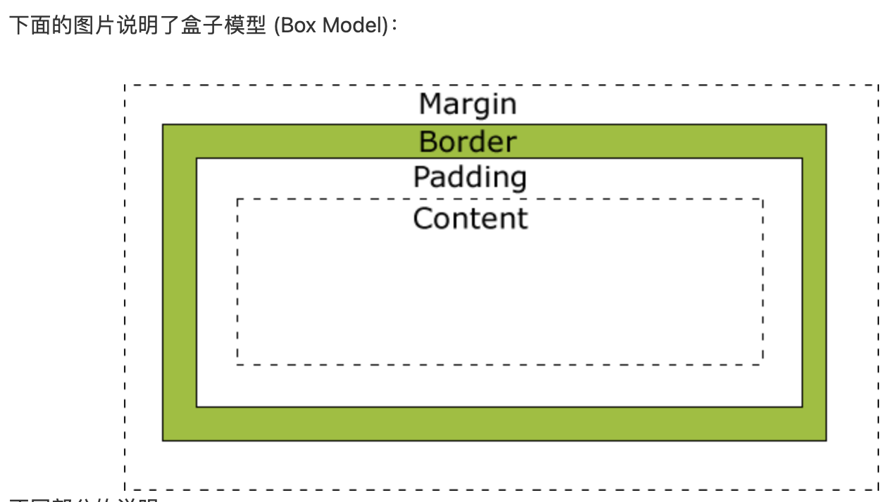

所有 HTML 元素可以看作盒子，在 CSS 中，"box model "这一术语是用来设计和布局时使用。
CSS 盒模型本质上是一个盒子，封装周围的 HTML 元素，它包括：边距，边框，填充，和实际内容。
盒模型允许我们在其它元素和周围元素边框之间的空间放置元素
 不同部分的说明：提示：在盒模型中，外边距可以是负值，而且在很多情况下都要使用负值的外边距。
CSS盒子模型的内部结构CSS 3中，所有的页面元素都包含在一个矩形框内，称为盒子。
盒子描述了元素及其属性在页面布局中所占的空间大小
在页面设计中有4个常见属性：content（内容）、padding（内边距）、border（边框）和margin（外边距），
我们把这4部分转化成日常生活的盒子来理解，所以称为盒子模型
content（内容）就是盒子里装的东西，
padding（内边距）就是怕盒子里装的东西损坏而添加的泡沫或者其他抗震防挤压的辅料，
border（边框）就是盒子本身了，
margin（外边距）则说明盒子摆放的时候不能全部堆在一起，要留一定空隙。
在网页设计中，content常指文字、图片等元素，但是也可以是小盒子（DIV嵌套），
padding只有宽度属性，可以理解为真实盒子中抗震辅料的厚度，
而border有大小和颜色之分，又可以理解为真实盒子的厚度以及这个盒子的颜色或材料，
margin就是该盒子与其他东西要保留多大距离
一个盒子实际所占有的宽度（或高度）是由“内容+内边距+边框+外边距”组成的。

最终元素的总宽度计算公式是这样的：
总元素的宽度=宽度+左填充+右填充+左边框+右边框+左边距+右边距
元素的总高度最终计算公式是这样的：
总元素的高度=高度+顶部填充+底部填充+上边框+下边框+上边距+下边距